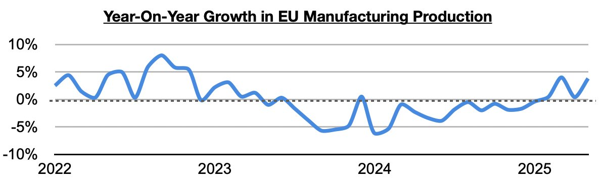
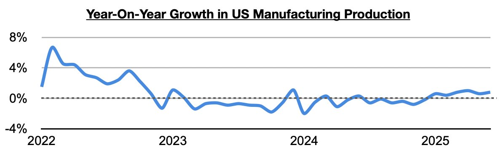
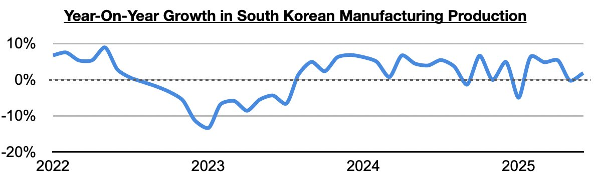
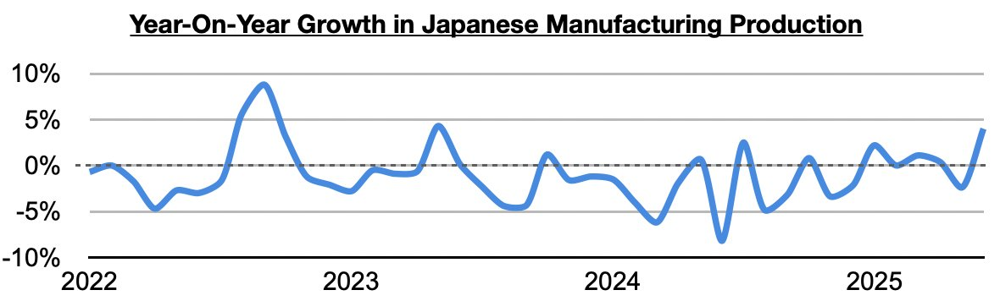
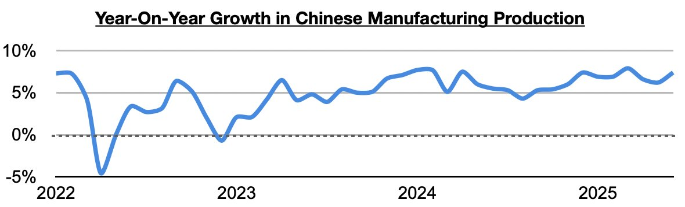
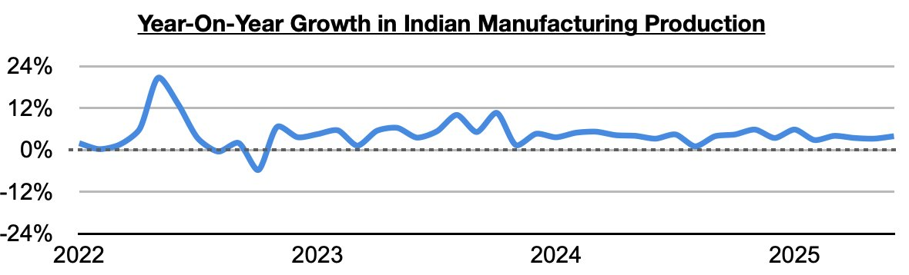
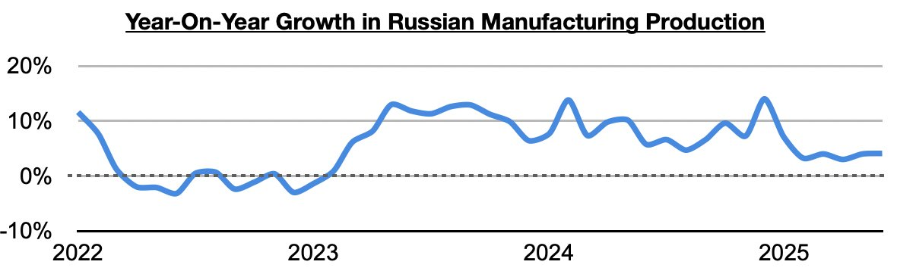

In Commodore Research's Weekly Executive Reports, we have long been discussing how manufacturing production has been able to continue to enjoy sustained year-on-year growth in China, India, and Russia. All have seen at least twenty-nine months of sustained year-on-year growth. Of note more recently is that the European Union, the United States, South Korea, and Japan have all finally been enjoying sustained growth as well.

In the United States, manufacturing production has now grown on a year-on-year basis for six straight months. Previously, it had contracted on a year-on-year basis during nineteen of the prior twenty-two months.

In South Korea, manufacturing production has now grown on a year-on-year basis during four of the last five months. Previously, it had contracted on a year-on-year basis during three of the prior five months.

In Japan, manufacturing production has now grown on a year-on-year basis during five of the last six months. Previously, it had contracted on a year-on-year basis during eleven of the prior fourteen months.

China, India, and Russia have remained the global stalwarts. In China, manufacturing production has now grown on a year-on-year basis for thirty straight months.

In India, manufacturing production has now grown on a year-on-year basis for thirty-two straight months.

In Russia, manufacturing production has now grown on a year-on-year basis for twenty-nine straight months.
